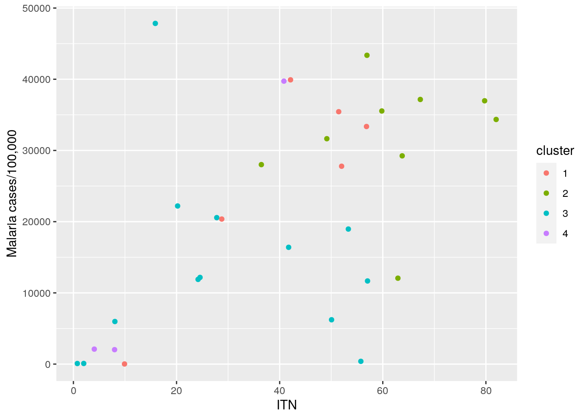
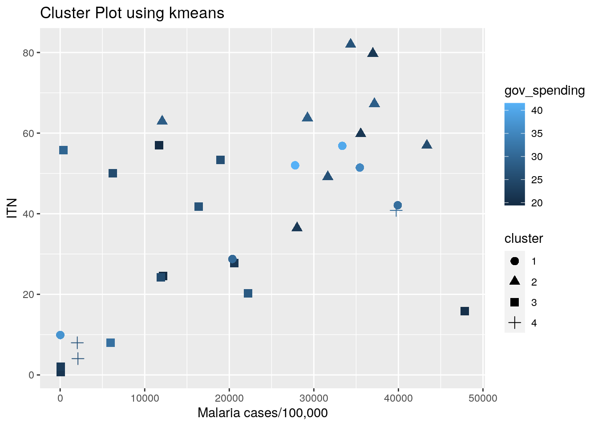

I am currently enrolled in a Global Health studies class and one disease that continues to be relevant in our discussion is the prevalence of Malaria. One thing that I was not aware of before this class is that families in underdeveloped worlds cover their households with nets, more specifically, Insecticide-treated bed nets (ITN). Provided through government spending, these nets have been shown to greatly reduce the number of malaria illness, severe disease, and death due to malaria.
In this project, I would like to further understand the correlation between the percentage of households who have ITN and their incidence and death rates of Malaria. I have pulled data from “Our World in Data”. The three data sets are: “Number of Malaria cases per 100,000”, “Percentage of households with at least one ITN for sleeping”, and “Number of deaths from Malaria”.(https://ourworldindata.org/grapher/number-of-malaria-cases-per-100000-individuals, https://ourworldindata.org/grapher/households-with-at-least-one-itn and https://ourworldindata.org/grapher/malaria-deaths-ihme?tab=chart, respectively) The first data set lists the entity (country), code, year, and incidence of Malaria per 100,000. The second data set lists the entity, code, year and the percentage of households with at least one ITN for sleeping. The third data set lists the entity, code, year and the number of deaths.
In addition, since many ITNs are provided through government spending, I would like to see if there is correlation in the amount of government spending with the incidence of Malaria and the rate of death due to Malaria. The data set,“Government Spending”, was also found through “Our World in Data” (https://ourworldindata.org/grapher/historical-gov-spending-gdp). This data set lists the entity, code, year, and the amount of government spending.
I hypothesize that if government spends more money, the more amount of ITN available, and the lower the incidence and death from Malaria.
library(tidyverse)
ITN <- read_csv("households-with-at-least-one-itn.csv")
glimpse(ITN)## Rows: 78
## Columns: 4
## $ Entity <chr> "Benin"…
## $ Code <chr> "BEN", …
## $ Year <dbl> 2006, 2…
## $ `Indicator:Households with at least one ITN for sleeping (%)` <dbl> 24.5565…incidence <- read_csv("number-of-malaria-cases-per-100000-individuals (1).csv")
glimpse(incidence)## Rows: 879
## Columns: 4
## $ Entity <chr> "Albania", "Albania", "Albania"…
## $ Code <chr> "ALB", "ALB", "ALB", "ALB", "DZ…
## $ Year <dbl> 2006, 2007, 2008, 2009, 2006, 2…
## $ `Malaria cases/100,000 pop. - wef_cm` <dbl> 0.000000e+00, 0.000000e+00, 0.0…malaria_deaths <- read_csv("malaria-deaths-ihme.csv")
glimpse(malaria_deaths)## Rows: 6,468
## Columns: 4
## $ Entity <chr> "Afghanistan", "Afghanistan", "Afghanistan", "Afghanistan", "A…
## $ Code <chr> "AFG", "AFG", "AFG", "AFG", "AFG", "AFG", "AFG", "AFG", "AFG",…
## $ Year <dbl> 1990, 1991, 1992, 1993, 1994, 1995, 1996, 1997, 1998, 1999, 20…
## $ Deaths <dbl> 463.6124, 487.1916, 521.7142, 675.6577, 782.4453, 815.0452, 88…govt_spend <- read_csv("historical-gov-spending-gdp.csv")
glimpse(govt_spend)## Rows: 7,091
## Columns: 4
## $ Entity <chr> "Afghanis…
## $ Code <chr> "AFG", "A…
## $ Year <dbl> 2003, 200…
## $ `Government Expenditure (IMF based on Mauro et al. (2015))` <dbl> 14.06613,…Since the data is already tidy, the following code blocks demonstrate the ability to untidy and retidy two out of the four data sets.
Percentage of ITN in Households Data set:
glimpse(ITN)## Rows: 78
## Columns: 4
## $ Entity <chr> "Benin"…
## $ Code <chr> "BEN", …
## $ Year <dbl> 2006, 2…
## $ `Indicator:Households with at least one ITN for sleeping (%)` <dbl> 24.5565…ITN_untidy <- ITN %>% pivot_wider(names_from = "Year", values_from = "Entity")
glimpse(ITN_untidy)## Rows: 78
## Columns: 13
## $ Code <chr> "BEN", …
## $ `Indicator:Households with at least one ITN for sleeping (%)` <dbl> 24.5565…
## $ `2006` <chr> "Benin"…
## $ `2011` <chr> NA, "Be…
## $ `2003` <chr> NA, NA,…
## $ `2010` <chr> NA, NA,…
## $ `2005` <chr> NA, NA,…
## $ `2012` <chr> NA, NA,…
## $ `2007` <chr> NA, NA,…
## $ `2013` <chr> NA, NA,…
## $ `2008` <chr> NA, NA,…
## $ `2009` <chr> NA, NA,…
## $ `2001` <chr> NA, NA,…ITN_retidy <- ITN_untidy %>% pivot_longer(cols = 3:13, names_to = "Year",
values_to = "Entity") %>% na.omit()
glimpse(ITN_retidy)## Rows: 78
## Columns: 4
## $ Code <chr> "BEN", …
## $ `Indicator:Households with at least one ITN for sleeping (%)` <dbl> 24.5565…
## $ Year <chr> "2006",…
## $ Entity <chr> "Benin"…Incidence of Malaria per 100,000 Data set:
incidence## # A tibble: 879 x 4
## Entity Code Year `Malaria cases/100,000 pop. - wef_cm`
## <chr> <chr> <dbl> <dbl>
## 1 Albania ALB 2006 0
## 2 Albania ALB 2007 0
## 3 Albania ALB 2008 0
## 4 Albania ALB 2009 0
## 5 Algeria DZA 2006 0.978
## 6 Algeria DZA 2007 0.978
## 7 Algeria DZA 2008 0.978
## 8 Algeria DZA 2009 0
## 9 Algeria DZA 2010 0
## 10 Algeria DZA 2011 0
## # … with 869 more rowsincidence_untidy <- incidence %>% pivot_wider(names_from = "Code",
values_from = "Malaria cases/100,000 pop. - wef_cm")
incidence_untidy## # A tibble: 879 x 146
## Entity Year ALB DZA AGO ARG ARM AUS AUT AZE BHR BGD
## <chr> <dbl> <dbl> <dbl> <dbl> <dbl> <dbl> <dbl> <dbl> <dbl> <dbl> <dbl>
## 1 Alban… 2006 0 NA NA NA NA NA NA NA NA NA
## 2 Alban… 2007 0 NA NA NA NA NA NA NA NA NA
## 3 Alban… 2008 0 NA NA NA NA NA NA NA NA NA
## 4 Alban… 2009 0 NA NA NA NA NA NA NA NA NA
## 5 Alger… 2006 NA 0.978 NA NA NA NA NA NA NA NA
## 6 Alger… 2007 NA 0.978 NA NA NA NA NA NA NA NA
## 7 Alger… 2008 NA 0.978 NA NA NA NA NA NA NA NA
## 8 Alger… 2009 NA 0 NA NA NA NA NA NA NA NA
## 9 Alger… 2010 NA 0 NA NA NA NA NA NA NA NA
## 10 Alger… 2011 NA 0 NA NA NA NA NA NA NA NA
## # … with 869 more rows, and 134 more variables: BRB <dbl>, BEL <dbl>,
## # BEN <dbl>, BTN <dbl>, BOL <dbl>, BIH <dbl>, BWA <dbl>, BRA <dbl>,
## # BRN <dbl>, BGR <dbl>, BFA <dbl>, BDI <dbl>, KHM <dbl>, CMR <dbl>,
## # CAN <dbl>, CPV <dbl>, TCD <dbl>, CHL <dbl>, CHN <dbl>, COL <dbl>,
## # CRI <dbl>, CIV <dbl>, HRV <dbl>, CYP <dbl>, CZE <dbl>, DNK <dbl>,
## # DOM <dbl>, ECU <dbl>, EGY <dbl>, SLV <dbl>, EST <dbl>, SWZ <dbl>,
## # ETH <dbl>, FIN <dbl>, FRA <dbl>, GAB <dbl>, GMB <dbl>, GEO <dbl>,
## # DEU <dbl>, GHA <dbl>, GRC <dbl>, GTM <dbl>, GIN <dbl>, GUY <dbl>,
## # HTI <dbl>, HND <dbl>, HUN <dbl>, ISL <dbl>, IND <dbl>, IDN <dbl>,
## # IRN <dbl>, IRL <dbl>, ISR <dbl>, ITA <dbl>, JAM <dbl>, JPN <dbl>,
## # JOR <dbl>, KAZ <dbl>, KEN <dbl>, `NA` <dbl>, KWT <dbl>, KGZ <dbl>,
## # LAO <dbl>, LVA <dbl>, LSO <dbl>, LBR <dbl>, LBY <dbl>, LTU <dbl>,
## # LUX <dbl>, MDG <dbl>, MWI <dbl>, MYS <dbl>, MLI <dbl>, MLT <dbl>,
## # MRT <dbl>, MUS <dbl>, MEX <dbl>, MNG <dbl>, MNE <dbl>, MAR <dbl>,
## # MOZ <dbl>, MMR <dbl>, NAM <dbl>, NPL <dbl>, NLD <dbl>, NZL <dbl>,
## # NIC <dbl>, NGA <dbl>, MKD <dbl>, NOR <dbl>, OMN <dbl>, PAK <dbl>,
## # PAN <dbl>, PRY <dbl>, PER <dbl>, PHL <dbl>, POL <dbl>, PRT <dbl>,
## # QAT <dbl>, ROU <dbl>, …incidence_retidy <- incidence_untidy %>% pivot_longer(cols = 3:146,
names_to = "Code", values_to = "Malaria cases per 100,000") %>%
na.omit()
incidence_retidy## # A tibble: 879 x 4
## Entity Year Code `Malaria cases per 100,000`
## <chr> <dbl> <chr> <dbl>
## 1 Albania 2006 ALB 0
## 2 Albania 2007 ALB 0
## 3 Albania 2008 ALB 0
## 4 Albania 2009 ALB 0
## 5 Algeria 2006 DZA 0.978
## 6 Algeria 2007 DZA 0.978
## 7 Algeria 2008 DZA 0.978
## 8 Algeria 2009 DZA 0
## 9 Algeria 2010 DZA 0
## 10 Algeria 2011 DZA 0
## # … with 869 more rowsSince the four datasets all have in common the Entity (country) and Code, I decided to use that as my commmon ID. I began with creating a dataset that shows the deaths and incidence of Malaria using full_join(). I began with this since I wanted to ensure that in any given year that there was reported for incidence of Malaria, there was also reported deaths from Malaria. Using na.omit(), I was able to omit any years for which the two data sets did not have in common or did not have both variables accounted for.
# tidying/merging datasets
death_incidence <- malaria_deaths %>% full_join(incidence) %>%
na.omit()
death_incidence## # A tibble: 870 x 5
## Entity Code Year Deaths `Malaria cases/100,000 pop. - wef_cm`
## <chr> <chr> <dbl> <dbl> <dbl>
## 1 Albania ALB 2006 0 0
## 2 Albania ALB 2007 0 0
## 3 Albania ALB 2008 0 0
## 4 Albania ALB 2009 0 0
## 5 Algeria DZA 2006 7.21 0.978
## 6 Algeria DZA 2007 7.30 0.978
## 7 Algeria DZA 2008 7.00 0.978
## 8 Algeria DZA 2009 6.81 0
## 9 Algeria DZA 2010 6.30 0
## 10 Algeria DZA 2011 6.12 0
## # … with 860 more rowsNext, I determined in which observations was there ITN reported for that same year using right_join(). I used right_join in this dataset since I wanted to add the percentage of ITN noted for each year and the incidence and death rates that correlated to the percentage of ITN.
ITN_DI <- death_incidence %>% right_join(ITN) %>% na.omit()
glimpse(ITN_DI)## Rows: 42
## Columns: 6
## $ Entity <chr> "Benin"…
## $ Code <chr> "BEN", …
## $ Year <dbl> 2006, 2…
## $ Deaths <dbl> 1.11569…
## $ `Malaria cases/100,000 pop. - wef_cm` <dbl> 12172.5…
## $ `Indicator:Households with at least one ITN for sleeping (%)` <dbl> 24.5565…Finally I joined all four data sets by left_join() with the governemnt expenditures data set so I could see which observations there was government spending. The final data set (malaria_full) shows the incidence per 100,000 and the number of deaths from Malaria when there is ITN and Government spending present. As previously mentioned, I used na.omit() to omit any observation wherein the four variables (incidence, death, ITN, and government spending) were missing a value, as well as to omit the years in which no values were observed for all four variables. (It should also be noted that after joining these datasets I was left with the range of years from 2006-2011)
malaria_full <- ITN_DI %>% left_join(govt_spend) %>% na.omit()
glimpse(malaria_full)## Rows: 31
## Columns: 7
## $ Entity <chr> "Benin"…
## $ Code <chr> "BEN", …
## $ Year <dbl> 2006, 2…
## $ Deaths <dbl> 1.11569…
## $ `Malaria cases/100,000 pop. - wef_cm` <dbl> 12172.5…
## $ `Indicator:Households with at least one ITN for sleeping (%)` <dbl> 24.5565…
## $ `Government Expenditure (IMF based on Mauro et al. (2015))` <dbl> 19.6458…# renaming colums to make it easier to read
malaria_full <- malaria_full %>% rename(`Government Expenditure` = "Government Expenditure (IMF based on Mauro et al. (2015))")
malaria_full <- malaria_full %>% rename(`% ITN` = "Indicator:Households with at least one ITN for sleeping (%)")
malaria_full <- malaria_full %>% rename(`Malaria cases/100,000` = "Malaria cases/100,000 pop. - wef_cm")
malaria_full <- malaria_full %>% rename(ITN = "% ITN")Since the code of the country is not technically needed in my project, I decided to drop it by using select.
malaria_data <- malaria_full %>% select(-Code)In addition, I wanted to determine out of the remaining 31 observations how many countries and years existed in my data set. Which was 24 countries and 6 different years.
malaria_data %>% summarise(n_distinct(Entity))## # A tibble: 1 x 1
## `n_distinct(Entity)`
## <int>
## 1 24malaria_data %>% summarise(n_distinct(Year))## # A tibble: 1 x 1
## `n_distinct(Year)`
## <int>
## 1 6After finding the distinct number of countries that existed in my data set, I decided to do some research to determine which countries accounted for most of the malaria cases and deaths.
According to the World Health Organization, six countries account for approximately half of all malaria deaths worldwide: Nigeria, Congo, Tanzania, Burkina Faso, Mozambique and Niger, which are all located on the African continent
Using filter(), I was able to see the observations in my data set that accounted for the countries that held the most deaths due to Malaria. I found that only 4 out of the top 6 were included in my data set. I named this new observation “top4”.
top4 <- malaria_data %>% filter(Entity %in% c("Nigeria", "Congo",
"Tanzania", "Burkina Faso", "Mozambique", "Niger"))
top4## # A tibble: 7 x 6
## Entity Year Deaths `Malaria cases/100,00… ITN `Government Expenditu…
## <chr> <dbl> <dbl> <dbl> <dbl> <dbl>
## 1 Burkina Faso 2006 34345. 11894. 24.2 25.2
## 2 Burkina Faso 2010 38503. 43366. 56.9 25.4
## 3 Mozambique 2011 24331. 35441. 51.4 35.3
## 4 Nigeria 2007 237151. 2104. 4.05 26.3
## 5 Nigeria 2008 241186. 2027. 7.98 26.7
## 6 Nigeria 2011 206468. 39736. 40.8 30.6
## 7 Tanzania 2010 18817. 29245. 63.8 28.4Since I am looking for correlation between the number of cases and the number of deaths of Malaria based on the amount of ITN and government spending, I wanted to determine the percentage of households with ITN and the amount of money government spent.
After accounting for the top four countries that were included in my data, I arranged these countries based on descending percentage of household with ITN to look at the incidence and deaths due to Malaria. Then I arranged these countries based on ascending government expenditures. I noted that after these arrangements I did not see much correlation between my variables within the top four countries.
top4 %>% arrange(-ITN)## # A tibble: 7 x 6
## Entity Year Deaths `Malaria cases/100,00… ITN `Government Expenditu…
## <chr> <dbl> <dbl> <dbl> <dbl> <dbl>
## 1 Tanzania 2010 18817. 29245. 63.8 28.4
## 2 Burkina Faso 2010 38503. 43366. 56.9 25.4
## 3 Mozambique 2011 24331. 35441. 51.4 35.3
## 4 Nigeria 2011 206468. 39736. 40.8 30.6
## 5 Burkina Faso 2006 34345. 11894. 24.2 25.2
## 6 Nigeria 2008 241186. 2027. 7.98 26.7
## 7 Nigeria 2007 237151. 2104. 4.05 26.3top4 %>% arrange(`Government Expenditure`)## # A tibble: 7 x 6
## Entity Year Deaths `Malaria cases/100,00… ITN `Government Expenditu…
## <chr> <dbl> <dbl> <dbl> <dbl> <dbl>
## 1 Burkina Faso 2006 34345. 11894. 24.2 25.2
## 2 Burkina Faso 2010 38503. 43366. 56.9 25.4
## 3 Nigeria 2007 237151. 2104. 4.05 26.3
## 4 Nigeria 2008 241186. 2027. 7.98 26.7
## 5 Tanzania 2010 18817. 29245. 63.8 28.4
## 6 Nigeria 2011 206468. 39736. 40.8 30.6
## 7 Mozambique 2011 24331. 35441. 51.4 35.3I did the same process for the my full data set, and did not see much correlation between the amount of government expenditures and percentage of ITN and the rate of Malaria incidence/death.
malaria_data %>% arrange(-ITN)## # A tibble: 31 x 6
## Entity Year Deaths `Malaria cases/100,00… ITN `Government Expenditu…
## <chr> <dbl> <dbl> <dbl> <dbl> <dbl>
## 1 Rwanda 2010 2243. 34352. 82.0 26.7
## 2 Benin 2011 9768. 36976. 79.8 22.0
## 3 Cote d'Ivoi… 2011 30031. 37162. 67.3 28.5
## 4 Tanzania 2010 18817. 29245. 63.8 28.4
## 5 Senegal 2010 4814. 12063. 62.9 28.1
## 6 Uganda 2011 28153. 35543. 59.8 21.7
## 7 Madagascar 2008 8820. 11674. 57.0 19.4
## 8 Burkina Faso 2010 38503. 43366. 56.9 25.4
## 9 Malawi 2010 8334. 33363. 56.8 40.3
## 10 Kenya 2008 8258. 388. 55.7 29.6
## # … with 21 more rowsmalaria_data %>% arrange(`Government Expenditure`)## # A tibble: 31 x 6
## Entity Year Deaths `Malaria cases/100,0… ITN `Government Expenditu…
## <chr> <dbl> <dbl> <dbl> <dbl> <dbl>
## 1 Madagascar 2008 8820. 11674. 57.0 19.4
## 2 Benin 2006 11157. 12173. 24.6 19.6
## 3 Uganda 2006 50080. 47843. 15.9 20.4
## 4 Pakistan 2006 5280. 81.5 0.755 21.5
## 5 Uganda 2011 28153. 35543. 59.8 21.7
## 6 Zimbabwe 2009 860. 20567. 27.8 21.9
## 7 Benin 2011 9768. 36976. 79.8 22.0
## 8 Cameroon 2011 23451. 28013. 36.4 22.0
## 9 Tajikistan 2006 14.6 87.5 2.00 22.4
## 10 Burkina Fa… 2006 34345. 11894. 24.2 25.2
## # … with 21 more rowsAfter trying to see if I could find any correlation between my variables, I decided to determine the overall average number of deaths and incidence per 100,000 in each year included in my data set.
I grouped the malaria data set by year and summarized the average number of deaths and incidence. From this I saw that the greatest average of deaths due to Malaria were in 2007 and the greatest average of incidence per 100,000 was in 2011.
With my hypothesis in mind, I wanted to see which year was when the government spent the least amount of money and the most amount of money (2009,2010). As well as which years had the lowest and highest percentage of ITN (2006, 2011).
# one at a time
malaria_data %>% group_by(Entity, Year) %>% summarise(mean_death = mean(Deaths)) %>%
arrange(mean_death)## # A tibble: 31 x 3
## # Groups: Entity [24]
## Entity Year mean_death
## <chr> <dbl> <dbl>
## 1 Eswatini 2010 5.96
## 2 Namibia 2006 9.37
## 3 Tajikistan 2006 14.6
## 4 Mauritania 2007 343.
## 5 Zimbabwe 2010 836.
## 6 Zimbabwe 2009 860.
## 7 Rwanda 2010 2243.
## 8 Zambia 2007 4404.
## 9 Senegal 2010 4814.
## 10 Pakistan 2006 5280.
## # … with 21 more rowsmalaria_data %>% group_by(Entity, Year) %>% summarise(mean_incidence = mean(`Malaria cases/100,000`)) %>%
arrange(mean_incidence)## # A tibble: 31 x 3
## # Groups: Entity [24]
## Entity Year mean_incidence
## <chr> <dbl> <dbl>
## 1 Eswatini 2010 17.5
## 2 Pakistan 2006 81.5
## 3 Tajikistan 2006 87.5
## 4 Kenya 2008 388.
## 5 Nigeria 2008 2027.
## 6 Nigeria 2007 2104.
## 7 Mauritania 2007 5979.
## 8 Mali 2006 6226.
## 9 Madagascar 2008 11674.
## 10 Burkina Faso 2006 11894.
## # … with 21 more rowsmalaria_data %>% group_by(Entity, Year) %>% summarise(mean_spent = mean(`Government Expenditure`)) %>%
arrange(mean_spent)## # A tibble: 31 x 3
## # Groups: Entity [24]
## Entity Year mean_spent
## <chr> <dbl> <dbl>
## 1 Madagascar 2008 19.4
## 2 Benin 2006 19.6
## 3 Uganda 2006 20.4
## 4 Pakistan 2006 21.5
## 5 Uganda 2011 21.7
## 6 Zimbabwe 2009 21.9
## 7 Benin 2011 22.0
## 8 Cameroon 2011 22.0
## 9 Tajikistan 2006 22.4
## 10 Burkina Faso 2006 25.2
## # … with 21 more rowsmalaria_data %>% group_by(Entity, Year) %>% summarise(mean_nets = mean(ITN)) %>%
arrange(mean_nets)## # A tibble: 31 x 3
## # Groups: Entity [24]
## Entity Year mean_nets
## <chr> <dbl> <dbl>
## 1 Pakistan 2006 0.755
## 2 Tajikistan 2006 2.00
## 3 Nigeria 2007 4.05
## 4 Nigeria 2008 7.98
## 5 Mauritania 2007 8.04
## 6 Eswatini 2010 9.91
## 7 Uganda 2006 15.9
## 8 Namibia 2006 20.2
## 9 Burkina Faso 2006 24.2
## 10 Benin 2006 24.6
## # … with 21 more rows# all together
malaria_data %>% group_by(Entity, Year) %>% summarize_if(is.numeric,
list(mean = mean), na.rm = T)## # A tibble: 31 x 6
## # Groups: Entity [24]
## Entity Year Deaths_mean `Malaria cases/100… ITN_mean `Government Expendi…
## <chr> <dbl> <dbl> <dbl> <dbl> <dbl>
## 1 Benin 2006 11157. 12173. 24.6 19.6
## 2 Benin 2011 9768. 36976. 79.8 22.0
## 3 Burkina … 2006 34345. 11894. 24.2 25.2
## 4 Burkina … 2010 38503. 43366. 56.9 25.4
## 5 Burundi 2010 8493. 27785. 52.0 41.5
## 6 Cameroon 2011 23451. 28013. 36.4 22.0
## 7 Chad 2010 11262. 39920. 42.1 31.2
## 8 Cote d'I… 2011 30031. 37162. 67.3 28.5
## 9 Eswatini 2010 5.96 17.5 9.91 37.1
## 10 Ghana 2008 31370. 16400. 41.7 26.8
## # … with 21 more rowsNext, I wanted to determine the Mortality rate of Malaria. I used the Mortality equation (Mortality = (# Deaths/ Total population)*100). In order to find the Mortality rate, I had to gather data that included the populations of my observations.
I used the population data set from “Our World in Data” (https://ourworldindata.org/world-population-growth). I used left_join() to only include the populations that were observed in my full malaria data set. Then using mutate(), I was able to create a new column that determined the Mortality rate for each of my observations. I named this finding “all_malaria”.
I was also curious to see which country, during which year, had the largest Mortality rate so I used arrange() for the variable and discovered that Burkina Faso (one of the top six) had the largest Mortality rate, which was in 2006.
# using mutate()
global_pop <- read_csv("population.csv")
pop_malaria <- malaria_data %>% left_join(global_pop)
all_malaria <- pop_malaria %>% mutate(Mortality = (Deaths/`Total population`) *
100) %>% select(-Code)
all_malaria %>% arrange(-Mortality)## # A tibble: 31 x 8
## Entity Year Deaths `Malaria cases/… ITN `Government Exp… `Total populati…
## <chr> <dbl> <dbl> <dbl> <dbl> <dbl> <dbl>
## 1 Burki… 2006 3.43e4 11894. 24.2 25.2 13829000
## 2 Burki… 2010 3.85e4 43366. 56.9 25.4 15605000
## 3 Mali 2006 2.77e4 6226. 50.1 25.4 13203000
## 4 Uganda 2006 5.01e4 47843. 15.9 20.4 28571000
## 5 Niger… 2007 2.37e5 2104. 4.05 26.3 146340000
## 6 Niger… 2008 2.41e5 2027. 7.98 26.7 150270000
## 7 Cote … 2011 3.00e4 37162. 67.3 28.5 21029000
## 8 Benin 2006 1.12e4 12173. 24.6 19.6 8217000
## 9 Ghana 2008 3.14e4 16400. 41.7 26.8 23564000
## 10 Niger… 2011 2.06e5 39736. 40.8 30.6 162804992
## # … with 21 more rows, and 1 more variable: Mortality <dbl>The following code chunk is the summary statistics for my numeric variables. I was able to determine the standard deviation, variance, quantiles, minimum and maximum.
# standard devation -
all_malaria %>% group_by(Year) %>% summarise_if(is.numeric, list(sd = sd),
na.rm = T)## # A tibble: 6 x 7
## Year Deaths_sd `Malaria cases/… ITN_sd `Government Exp… `Total populati…
## <dbl> <dbl> <dbl> <dbl> <dbl> <dbl>
## 1 2006 19345. 16669. 16.6 2.97 58020682.
## 2 2007 135564. 8831. 27.4 3.08 80090608.
## 3 2008 113032. 7683. 22.8 4.36 61845961.
## 4 2009 NA NA NA NA NA
## 5 2010 12075. 13827. 21.2 6.03 11933721.
## 6 2011 69296. 3905. 15.2 5.21 53543949.
## # … with 1 more variable: Mortality_sd <dbl># variance -
all_malaria %>% group_by(Year) %>% summarise_if(is.numeric, list(var = var),
na.rm = T)## # A tibble: 6 x 7
## Year Deaths_var `Malaria cases/… ITN_var `Government Exp… `Total populati…
## <dbl> <dbl> <dbl> <dbl> <dbl> <dbl>
## 1 2006 3.74e 8 277869628. 275. 8.80 3.37e15
## 2 2007 1.84e10 77982490. 749. 9.51 6.41e15
## 3 2008 1.28e10 59034798. 522. 19.0 3.82e15
## 4 2009 NA NA NA NA NA
## 5 2010 1.46e 8 191177120. 449. 36.4 1.42e14
## 6 2011 4.80e 9 15250349. 230. 27.1 2.87e15
## # … with 1 more variable: Mortality_var <dbl># quantile -
all_malaria %>% summarize_if(is.numeric, list(Q1 = quantile),
probs = 0.25, na.rm = T)## # A tibble: 1 x 7
## Year_Q1 Deaths_Q1 `Malaria cases/… ITN_Q1 `Government Exp… `Total populati…
## <dbl> <dbl> <dbl> <dbl> <dbl> <dbl>
## 1 2007 4609. 8950. 22.2 22.2 10995500
## # … with 1 more variable: Mortality_Q1 <dbl>all_malaria %>% summarize_if(is.numeric, list(Q2 = quantile),
probs = 0.5, na.rm = T)## # A tibble: 1 x 7
## Year_Q2 Deaths_Q2 `Malaria cases/… ITN_Q2 `Government Exp… `Total populati…
## <dbl> <dbl> <dbl> <dbl> <dbl> <dbl>
## 1 2010 11157. 20567. 42.1 26.7 14540000
## # … with 1 more variable: Mortality_Q2 <dbl>all_malaria %>% summarize_if(is.numeric, list(Q3 = quantile),
probs = 0.75, na.rm = T)## # A tibble: 1 x 7
## Year_Q3 Deaths_Q3 `Malaria cases/… ITN_Q3 `Government Exp… `Total populati…
## <dbl> <dbl> <dbl> <dbl> <dbl> <dbl>
## 1 2010 29165. 34897. 56.9 29.9 26979500
## # … with 1 more variable: Mortality_Q3 <dbl>all_malaria %>% summarize_if(is.numeric, list(Q4 = quantile),
probs = 1, na.rm = T)## # A tibble: 1 x 7
## Year_Q4 Deaths_Q4 `Malaria cases/… ITN_Q4 `Government Exp… `Total populati…
## <dbl> <dbl> <dbl> <dbl> <dbl> <dbl>
## 1 2011 241186. 47843. 82.0 41.5 164023008
## # … with 1 more variable: Mortality_Q4 <dbl># min & max
min_malaria <- all_malaria %>% summarize_if(is.numeric, list(min = min),
na.rm = T)
min_malaria %>% pivot_longer(cols = 2:7, names_to = "Statistic",
values_to = "Value")## # A tibble: 6 x 3
## Year_min Statistic Value
## <dbl> <chr> <dbl>
## 1 2006 Deaths_min 5.96e+0
## 2 2006 Malaria cases/100,000_min 1.75e+1
## 3 2006 ITN_min 7.55e-1
## 4 2006 Government Expenditure_min 1.94e+1
## 5 2006 Total population_min 1.06e+6
## 6 2006 Mortality_min 2.11e-4max_malaria <- all_malaria %>% summarize_if(is.numeric, list(max = max),
na.rm = T)
max_malaria %>% pivot_longer(cols = 2:7, names_to = "Statistic",
values_to = "Value")## # A tibble: 6 x 3
## Year_max Statistic Value
## <dbl> <chr> <dbl>
## 1 2011 Deaths_max 241186.
## 2 2011 Malaria cases/100,000_max 47843.
## 3 2011 ITN_max 82.0
## 4 2011 Government Expenditure_max 41.5
## 5 2011 Total population_max 164023008
## 6 2011 Mortality_max 0.248After accounting for summary statistics, I determined the correlation between my numeric variables using `cor(use=“pair”)
# cor -
cor_malaria <- malaria_data %>% select(-Year) %>% select_if(is.numeric) %>%
cor(use = "pair")From my correlation matrix, I saw that there was little correlation between my variables.
After looking at the numbers and statistics from my data set and seeing little correlation, I decided to make a correlation matrix as well as a heat map to better visualize the correlation, if any, between my numeric variables.
cor_malaria %>% round(4)## Deaths Malaria cases/100,000 ITN
## Deaths 1.0000 -0.0811 -0.2950
## Malaria cases/100,000 -0.0811 1.0000 0.5585
## ITN -0.2950 0.5585 1.0000
## Government Expenditure -0.0218 0.0835 0.1135
## Government Expenditure
## Deaths -0.0218
## Malaria cases/100,000 0.0835
## ITN 0.1135
## Government Expenditure 1.0000cor_malaria %>% as.data.frame()## Deaths Malaria cases/100,000 ITN
## Deaths 1.00000000 -0.08113375 -0.2949572
## Malaria cases/100,000 -0.08113375 1.00000000 0.5585444
## ITN -0.29495717 0.55854436 1.0000000
## Government Expenditure -0.02176213 0.08345189 0.1134535
## Government Expenditure
## Deaths -0.02176213
## Malaria cases/100,000 0.08345189
## ITN 0.11345347
## Government Expenditure 1.00000000tidy_cor_malaria <- cor_malaria %>% as.data.frame() %>% rownames_to_column("var1") %>% pivot_longer(-1, names_to = "var2", values_to = "correlation")
tidy_cor_malaria## # A tibble: 16 x 3
## var1 var2 correlation
## <chr> <chr> <dbl>
## 1 Deaths Deaths 1
## 2 Deaths Malaria cases/100,000 -0.0811
## 3 Deaths ITN -0.295
## 4 Deaths Government Expenditure -0.0218
## 5 Malaria cases/100,000 Deaths -0.0811
## 6 Malaria cases/100,000 Malaria cases/100,000 1
## 7 Malaria cases/100,000 ITN 0.559
## 8 Malaria cases/100,000 Government Expenditure 0.0835
## 9 ITN Deaths -0.295
## 10 ITN Malaria cases/100,000 0.559
## 11 ITN ITN 1
## 12 ITN Government Expenditure 0.113
## 13 Government Expenditure Deaths -0.0218
## 14 Government Expenditure Malaria cases/100,000 0.0835
## 15 Government Expenditure ITN 0.113
## 16 Government Expenditure Government Expenditure 1tidy_cor_malaria %>% ggplot(aes(var1, var2, fill = correlation)) + geom_tile()+
scale_fill_gradient2(low="red",mid="white",high="blue")+ #makes colors!
geom_text(aes(label=round(correlation,2)),color = "black", size = 4)+ #overlays correlation values
theme(axis.text.x = element_text(angle = 90, hjust = 1))+ #flips the x-axis labels
coord_fixed()The heat map shows little correlation between my variables in the large data set.
ggplot(malaria_data, aes(ITN, `Malaria cases/100,000`)) + geom_point(aes(color = Entity)) +
labs(x = "Percentage of Households with ITN", y = "Incidence of Malaria per 100,000",
title = "Incidence of Malaria and % of ITN based on Country") +
labs(colour = "Country")I graphed the relationship between incidence of malaria and the percentage of households with ITN based on respective Countries.
I used ggplot() to place the percentage of ITN on the x axis and incidence of Malaria on the y axis. Using geom_point(), I was able to distinguish the different countries by color. From the graph, there seems to be a very small positive correlation between the variables. In some countries, although there was a higher percentage of households with ITN there was also higher incidence of Malaria.
ggplot(top4, aes(x = Entity, y = ITN, fill = Entity)) + geom_bar(stat = "summary",
fun = mean) + scale_fill_brewer() + labs(x = "Country", y = "Percentage of Households with ITN",
title = "% of Households with ITN in Four Top Countries ") +
geom_errorbar(stat = "summary", width = 0.5) + theme(legend.text = element_text(size = 6))The graph above shows the percentage of ITN in the top four countries. I used ggplot to plot the countries on the x-axis and the percentage of ITN on the y axis. I used geom_bar() to plot the mean incidence of Malaria for each country if it was accounted for. I distinguished each country by color and labeled my axes accordingly.
I noted that Nigeria, which according to WHO is the world’s leader in the number of deaths (23%) due to Malaria, had very low percentage of households with ITN.
library(cluster)
mal <- vector()
for (i in 1:4) {
mals <- malaria_data %>% dplyr::select(Deaths, `Malaria cases/100,000`,
ITN, `Government Expenditure`) %>% kmeans(., i)
mal[i] <- mals$tot.withinss
}
ggplot() + geom_point(aes(x = 1:4, y = mal)) + geom_path(aes(x = 1:4,
y = mal)) + xlab("clusters") + scale_x_continuous(breaks = 1:4)ml <- malaria_data %>% select_if(is.numeric) %>% na.omit()
kmeans <- ml %>% scale %>% kmeans(4)
kclust <- ml %>% mutate(cluster = as.factor(kmeans$cluster))
kclust %>% ggplot(aes(ITN, `Malaria cases/100,000`, color = cluster)) +
geom_point()
ml## # A tibble: 31 x 5
## Year Deaths `Malaria cases/100,000` ITN `Government Expenditure`
## <dbl> <dbl> <dbl> <dbl> <dbl>
## 1 2006 11157. 12173. 24.6 19.6
## 2 2011 9768. 36976. 79.8 22.0
## 3 2006 34345. 11894. 24.2 25.2
## 4 2010 38503. 43366. 56.9 25.4
## 5 2010 8493. 27785. 52.0 41.5
## 6 2011 23451. 28013. 36.4 22.0
## 7 2010 11262. 39920. 42.1 31.2
## 8 2011 30031. 37162. 67.3 28.5
## 9 2010 5.96 17.5 9.91 37.1
## 10 2008 31370. 16400. 41.7 26.8
## # … with 21 more rowskclust %>% mutate(gov_spending = ml$`Government Expenditure`) %>%
ggplot(aes(`Malaria cases/100,000`, ITN, color = gov_spending,
shape = cluster)) + geom_point(size = 3) + ggtitle("Cluster Plot using kmeans") I found that I needed 4 cluster since I have 4 numeric variables in my data set (Deaths, Incidence, % ITN, and Government Expenditure). I used kmeans to cluster my data and create the plots above. These plots show that none of my variables had that much in common, there is no correlation between my numeric variables.
From my data, I can conclude that there is not a relationship between the amount of money government spends, the percentage of households with ITN, and the incidence and death rate of Malaria. One reason that could contribute to why I was unable to see correlation between these variables is that the amount of government expenditures accounted for could be allocated to resources besides providing for ITN. Another reason could be if households that have ITN but their ITN has tears, therefore not protecting fully against mosquitoes.
As a Global Health student, I understand that there are many other societal and climate factors that contribute to the incidence and death rates of Malaria. If I were to revisit this project, I would be interested in looking into more variables that could contribute to the incidence rate of Malaria besides the four variables I focused on (including location, distance from body of water, humidty, global region etc.).
…